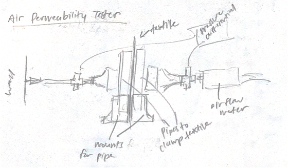
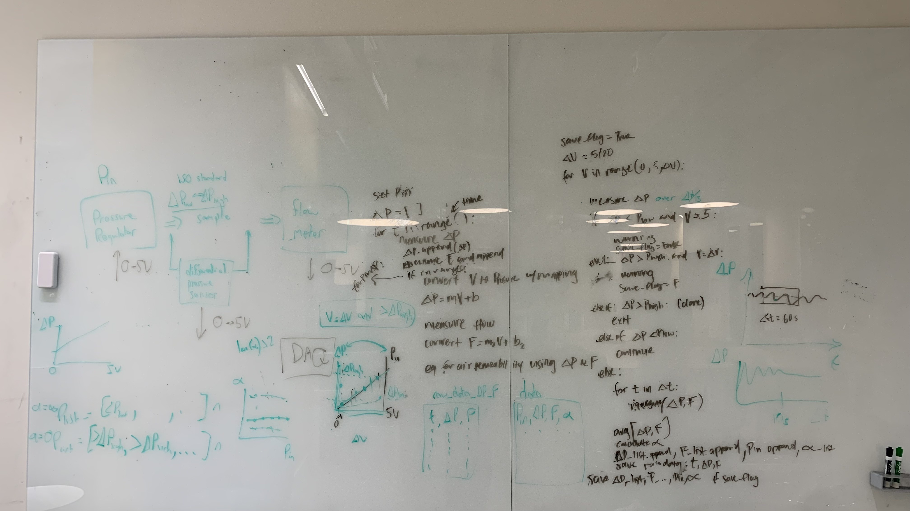
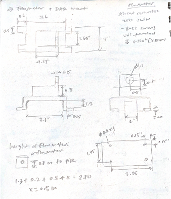
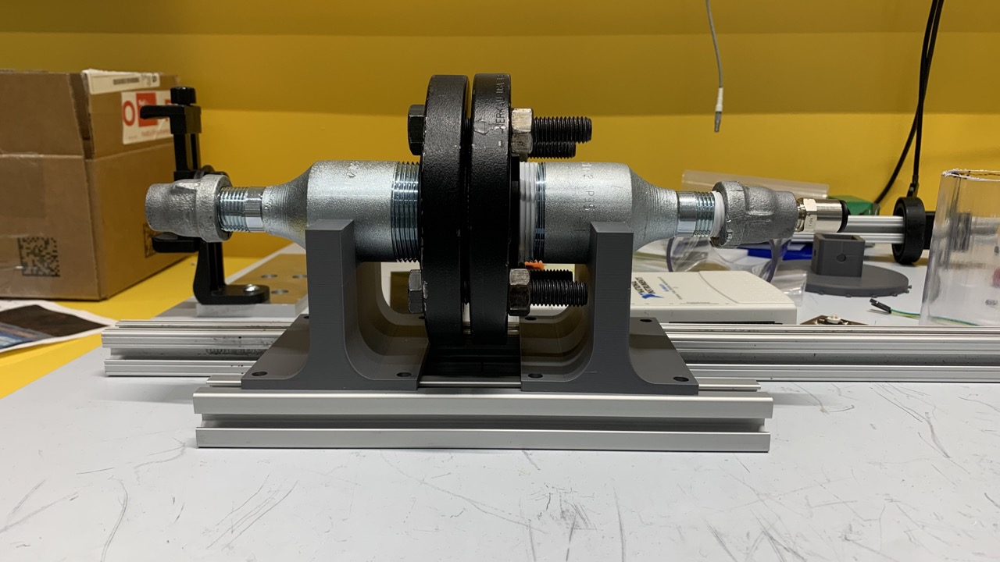
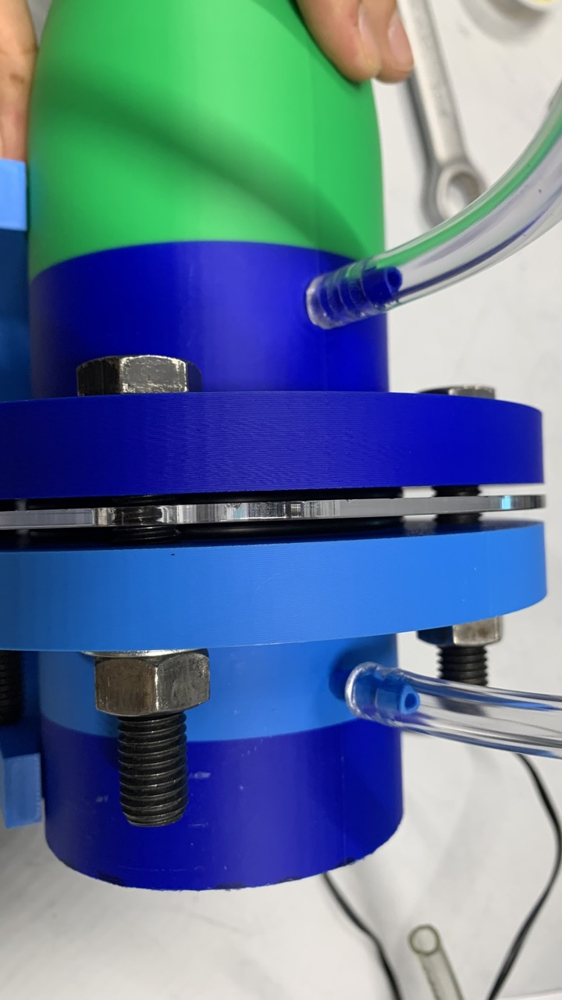
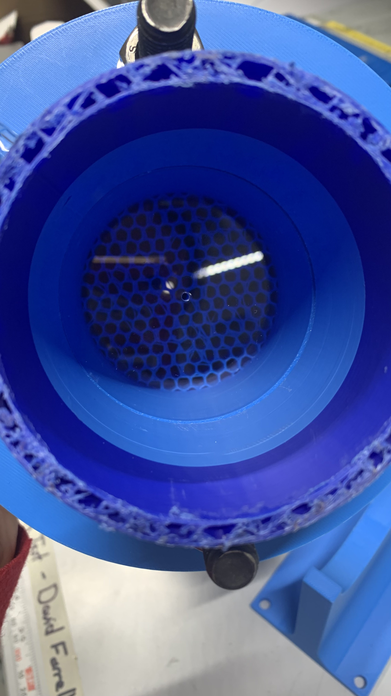
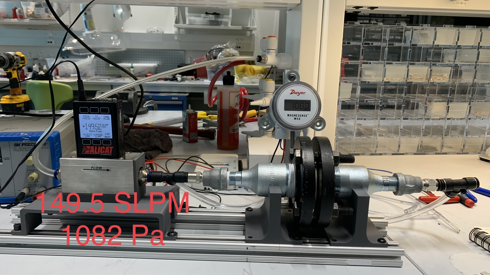

Problem Statement

Initial sketch

MATLAB script planning
Build an air permeability tester that measures the air flow rate through a material at a set pressure differential.
The setup connects to the wall vacuum, pulling air through the test material and flowmeter. A sensor measures the pressure differential across the material.
Ideas and Prototyping

Sketches for test rig parts

Initial setup with metal parts

Test section with o-rings

Inside view through calibration plate with honeycomb filter
Some of the main adjustments made along the way:
- Switched from metal to 3D prints to allow for customizable test area
- Adjusted 3D printing methods to reduce leaks
- Opened one end to atmosphere to reduce airflow fluctuations due to diameter change
Challenges

Calibration testing
Initially experienced a lot of fluctuation in readings depending on tubing diameter differences. Switched around the order and reduced number of connection points in the 3D print version.
When calibrating, measurements were consistently higher than theoretical calculations. Tried adjusting many different factors, and ultimately believe it may be due to inaccurate readings from pressure differential sensor.
Results

Last iteration
This tester was no longer needed for the research project, but it was at a point of providing consistent readings with an accurate trend, though offset from expected values. My next step would be to try out a different pressure sensor.